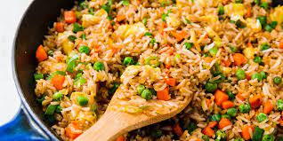

Fried Rice

Fried rice is a quick and delicious way to transform leftovers into something greater than the sum of its parts.
Fried rice has been a kitchen staple since as early as the Sui Dynasty (589–618 CE) in China. The primary reason for the continued popularity and ubiquity of this dish comes down to two things: its adaptability and the fact that people almost always cook too much rice to eat in one sitting.
Ingredients
- 3 tbsp sesame oil, divided
- 3 large eggs
- Kosher salt
- 2 carrots, diced
- 3 green onions, thinly sliced, white and green parts divided
- 3 cloves garlic, minced
- 1 tbsp peeled and minced ginger (from a 1" piece)
- 4 cups cooked long grain rice (preferably leftover)
- 3/4 cup frozen peas
- 3 tbsp low-sodium soy sauce
Steps
- Heat a large cast iron skillet over high heat until very hot, about 2 minutes. Add 1 tablespoon oil.
- Beat egg with 2 teaspoons water and a large pinch salt and add to skillet. Cook, stirring to form large soft curds, about 30 seconds. Transfer to a plate.
- Return skillet to high heat and add 2 tablespoons oil, the carrots, and whites of the green onions. Cook until lightly golden, about 2 minutes. Add garlic and ginger and cook, stirring, until fragrant, 1 minute.
- Add rice, peas, and cooked eggs to skillet. Pour in soy sauce and cook, stirring until heated through, 1 minute. Season with salt and pepper and stir in the remaining green onions.